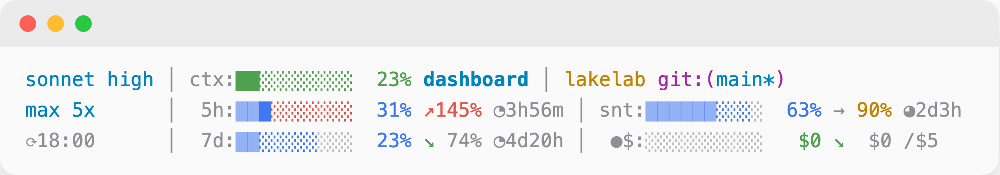
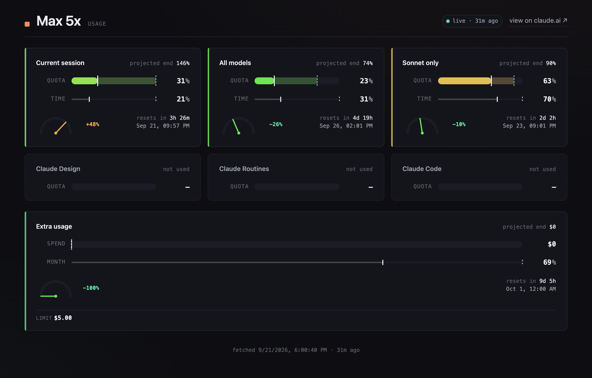
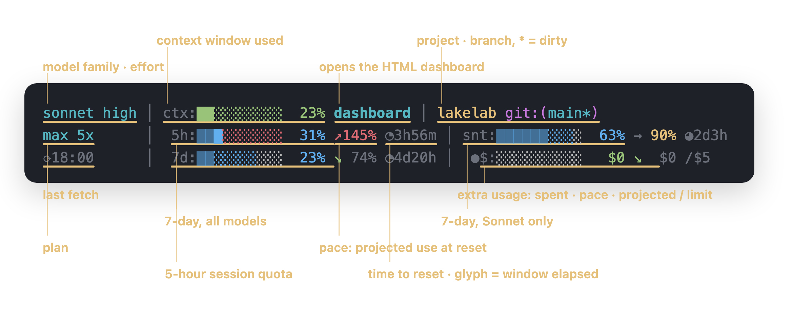

Claude Code statusline plugin · Node.js · MIT
Know you will run out before you run out.
Claude Code tells you about a quota when you hit it. claude-quota reads the same usage API the /usage page reads and keeps every bucket in the statusline while you work: the 5-hour session, the 7-day window, Sonnet and Opus, extra usage — and an arrow that says whether you will make it to the reset.

A percentage alone does not say whether you are in trouble; 60 % used with 80 % of the window gone is fine, 60 % used with 20 % gone is not. The pace arrow does that arithmetic for you, on every refresh.
Pace, not just percentage
↗145% is where you land at reset at the current rate. Over 100 % means the quota runs out first. The clock glyph ○◔◑◕● shows how much of the window has elapsed.
Every bucket
The 5-hour session, the 7-day all-models window, the 7-day Sonnet and Opus windows, and extra usage with spent, pace, projected and the monthly limit.
Colour carries the warning
Numbers stay small; the bar cells, the arrow and the money turn yellow and red on their own thresholds, and the cells the quota will never reach go grey.
Fits any terminal
Measured in columns, never wraps. Three lines on a normal terminal, two on a short one, model │ ctx% │ 5h% │ 7d% on one.
A live dashboard
Every render also writes an HTML dashboard beside its cache — one card per window with a pace gauge — and links it from line 1 on terminals with OSC 8 links.
Nothing new to trust
The token is the one Claude Code already holds, read from the Keychain. Every file written is 0600, dashboard strings are HTML-escaped, and the cache refuses files with broader permissions.
How a render runs
Claude Code runs the plugin as a subprocess on every statusline refresh.

- Context arrives on stdin
Model, effort, context window and cwd, as JSON — the same payload every statusline command gets.
- The token is read
From the macOS Keychain, or from
~/.claude/.credentials.jsonelsewhere if it is0600and yours. The same credential Claude Code uses; no login of its own. - Usage is fetched or served from cache
GET api.anthropic.com/api/oauth/usage, cached for two minutes. From 90 seconds a background refresh starts, so a long session never shows stale numbers and never fetches on the hot path. - One to three lines
Rendered to stdout, sized to the terminal; the reset timer, then pace and projection, then the bar are dropped in that order until the line fits. The dashboard is rewritten beside the cache.
Install
Node.js 18 or newer, and a Pro or Max subscription: the usage API has nothing for API-key logins, so only the model and context line renders there.
From npm
npm install -g @mmdemirbas/claude-quotaThen point the statusline at it in ~/.claude/settings.json:
settings.json
{
"statusLine": {
"type": "command",
"command": "claude-quota"
}
}If you use claude-hud, disable it first so the two do not share the line.
What you see
Each segment of the statusline and what it means.

| Segment | Meaning |
|---|---|
sonnet high | Model family and effort level |
ctx:██░░░░░░░░ 23% | Context window: a 10-cell bar and the percentage |
dashboard | An OSC 8 hyperlink to the HTML dashboard; plain text where links are unsupported |
lakelab git:(main*) | Project directory and branch; * means a dirty working tree |
max 5x | Plan name and multiplier |
5h: 7d: snt: ops: | The 5-hour session, the 7-day all-models window, the 7-day Sonnet and Opus windows |
█████░░░░░ 31% | Used share of the window |
↗145% → 90% ↘ 74% | Pace: the projected share at the end of the window; over 100 % means the quota runs out before it resets |
◔3h56m | Time until reset; the glyph is how much of the window has elapsed |
⟳18:00 | Local time of the last successful fetch |
●$: / ○$: | Extra usage on or off |
$0 ↘ $0 /$5 | Extra usage spent · pace · projected · monthly limit |
Security model
The plugin reads a credential and writes files in your home directory, so each surface has a rule.
| Surface | Rule | Why |
|---|---|---|
| Credential source | Keychain first; ~/.claude/.credentials.json as the fallback, refused unless 0600 and owned by you | A token planted by another local user is never used |
| Cache files | data.js, credit-grant.js, .profile-cache.json, dashboard.html under ~/.claude/plugins/claude-quota/, mode 0600; broader modes are refused | A second local user cannot feed the dashboard |
| Dashboard output | Every externally sourced string is HTML-escaped | A tampered API response cannot run script in the page |
| HTTPS | System trust store, TLS 1.2 minimum, no certificate pin | Anthropic rotates the leaf without a published pin set; a hardcoded pin would become an outage |
| Stderr | One warning line for HTTP 401/403 and rejected files; rate limits and expiry stay silent | CLAUDE_QUOTA_SILENT=1 disables all warnings |